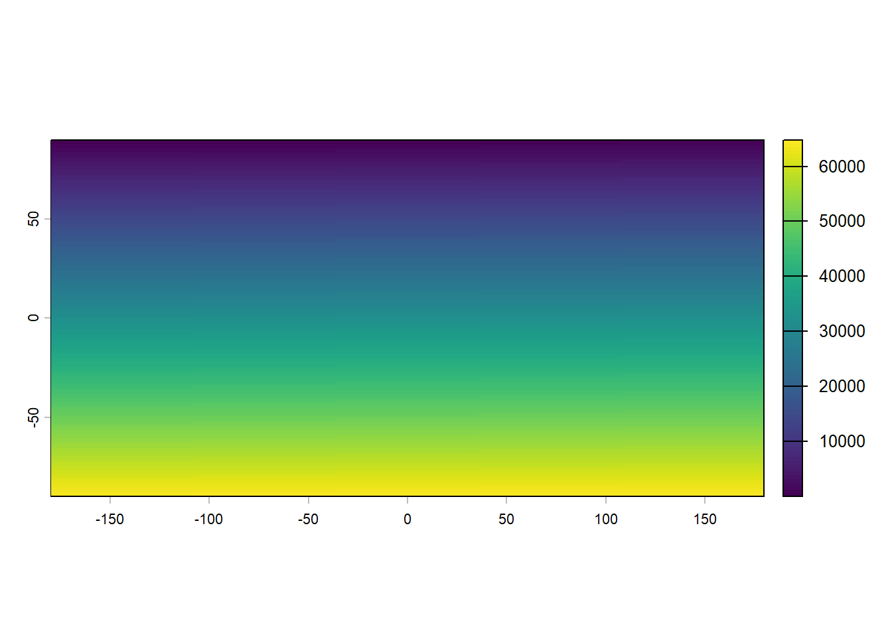
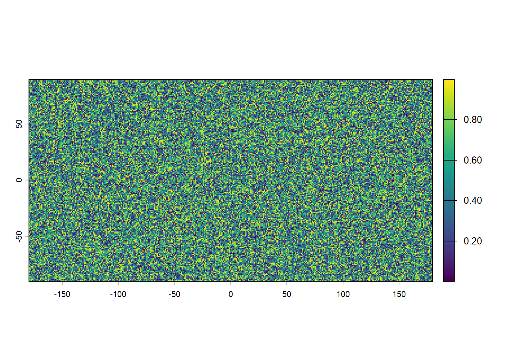
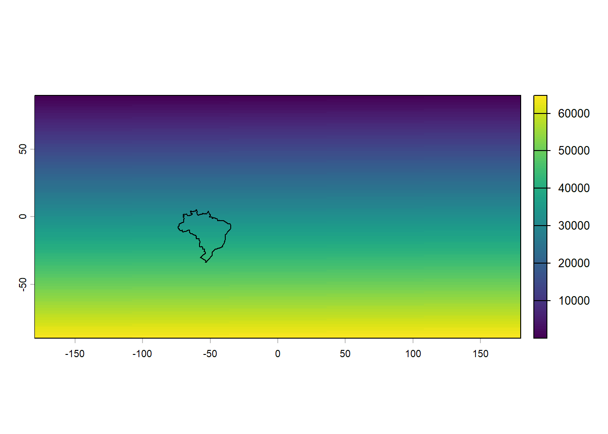
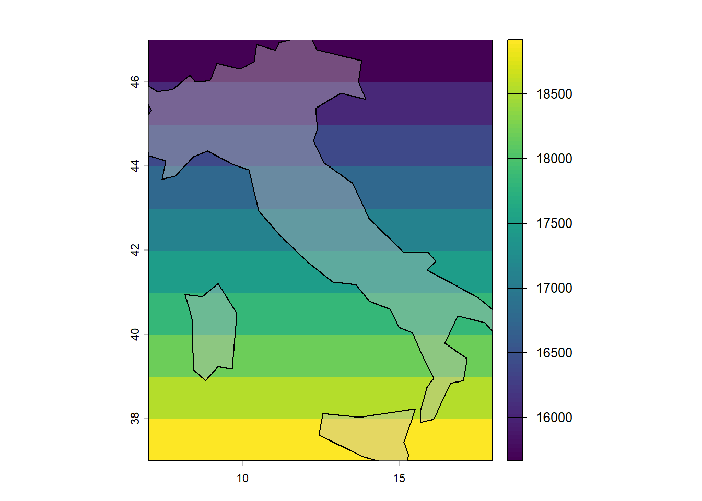
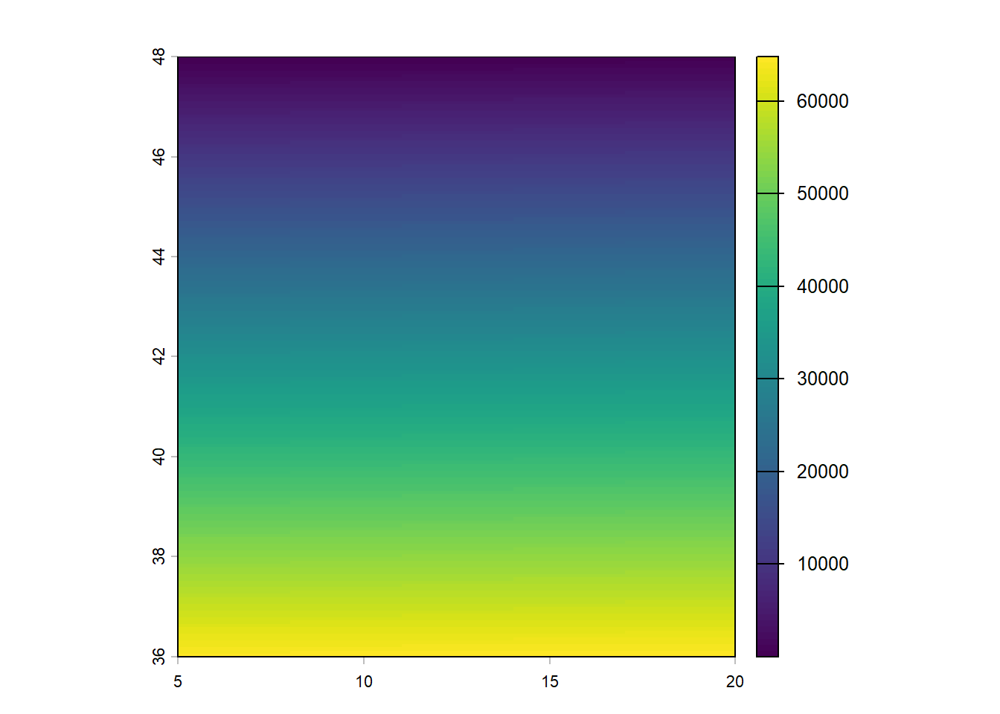
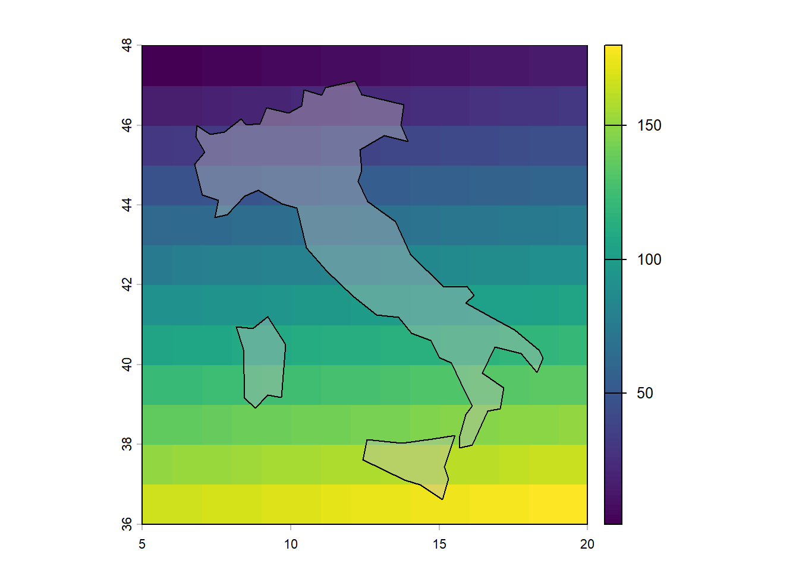
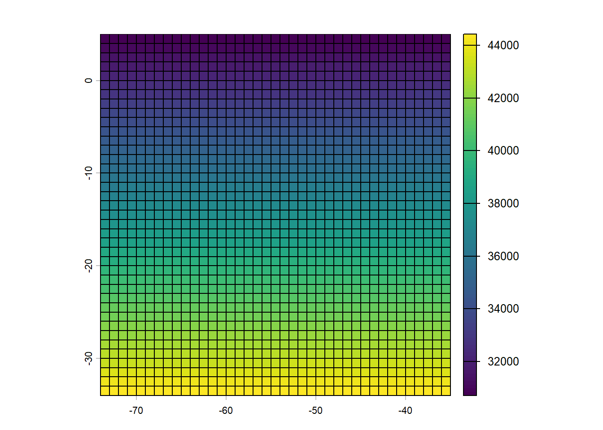
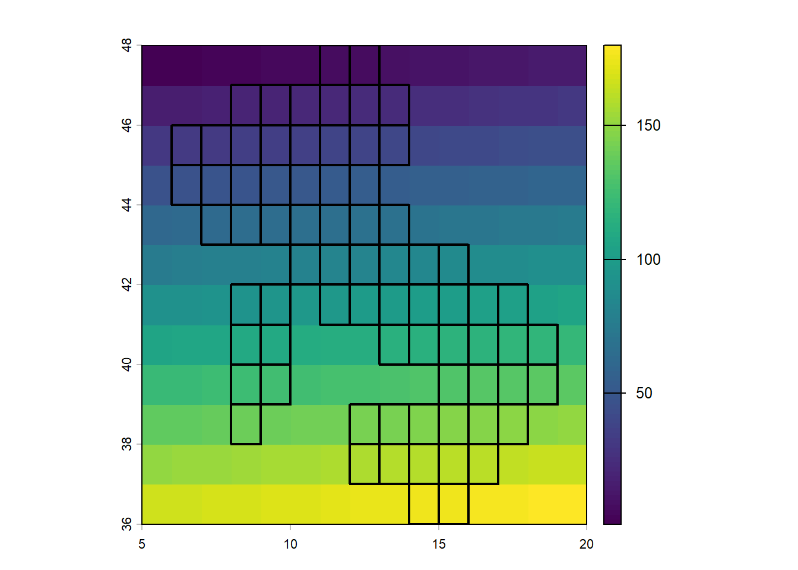
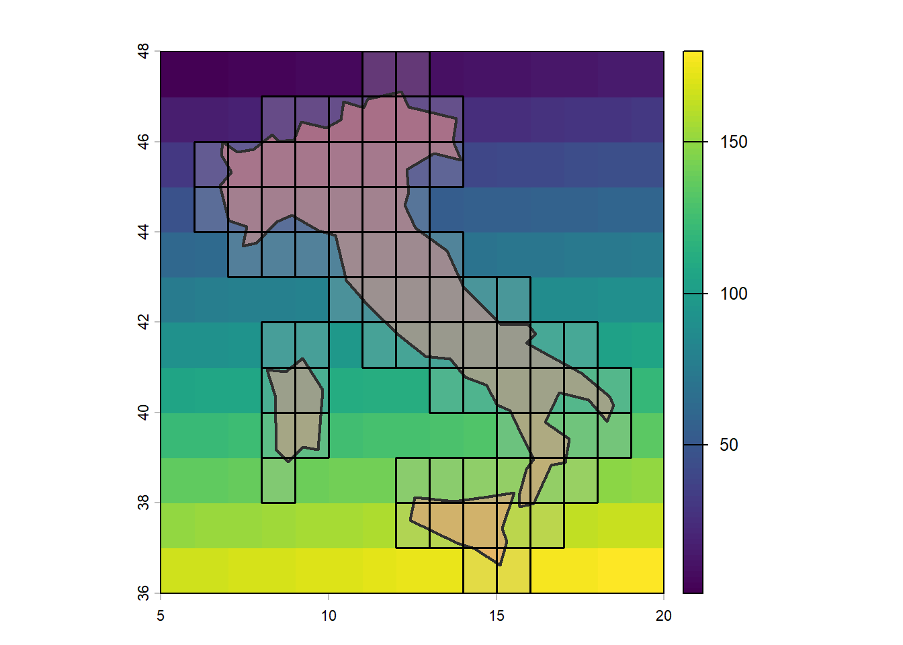

rm(list=ls())
library(terra) # raster operations
# library(stars)
library(sf) # vector operations
library(spData) # vector datasets
library(tidyverse) # data cleaning and trans phil
library(tidyterra) # plot raster images
library(patchwork) # stitch ggplotsClass 04: Intro to Raster Data
Intro
Raster data is represented as an “image:”
- Geography as pixels (gridcells) with associated values
- Normally represents high resolution features as of a geography (like an image)
We use the library terra to deal with Raster data; We also need exactextractr to perform high-performance zonal statistics; finally, finally, we include gdistance to calculate distances over raster.
Can be used for optimal path-finding algorithms using geospatial data
SpatRaster: rast() object in terra
Note: # layers \(\geq 1\) (can be multidimensional)
- time varying (temperatures, precipitations, etc)
- imagery: RGB as three layers
Raster data can be really big matrices; R does not load the entire dataset/RAM if really big
Data formats:
- .tif (most common)
- .png/.jpeg
- .nc for multi-layer rasters
Basics
Loading & Creating
To declare a raster object, we use the command rast() to initialize this object. If we investigate the object further, we can find some useful information:
r <- rast()
rclass : SpatRaster
size : 180, 360, 1 (nrow, ncol, nlyr)
resolution : 1, 1 (x, y)
extent : -180, 180, -90, 90 (xmin, xmax, ymin, ymax)
coord. ref. : lon/lat WGS 84 (CRS84) (OGC:CRS84) Note some important features:
- resolution: the total span of our ‘window’, divided by the number of grids. by default is \(1\times1\), which means that each grid is exactly \(1^{o} \text{ longitude} \times 1^{o} \text{ latitude}\). A small resolution value means: more cells (pixels), more detail, larger file size, and slower processing (>1 grid per \(1^o\times1^o\) ‘box’.
- extent: the ‘window’ our raster object takes. By default, this is a projection of the world map, using by default the
WGS84CRS - size: related to extent & resolution, this is the nrow \(\times\) ncol of our matrix (window). A 1$$1 resolution means that the there is a 1:1 match between the numbers of grids and number of rows & number of columns.
head(values(r)) # 'matrix' treated as a very long vector lyr.1
[1,] NaN
[2,] NaN
[3,] NaN
[4,] NaN
[5,] NaN
[6,] NaN# in r it fits the matrix horizontallyFurther investigation reveals that by default, the raster has no values stored. If we tried plotting it, we would return an empty plot; thus, we need to assign values to the object. Note that although our ‘window’ we are attempting to plot is a matrix, R stores this value as a vector that it then transposes and assigns row-by-row (in Python it acts the same, but assigns the values column-by-column, which could cause discrepancies if working between the two softwares).
Note that since our grid is \(180 \times 360\) with \(1 \times 1\) resolution, we have a total of \(64800\) cells.
To assign values, we can simply assign sequential values to the object by assigning each value to its corresponding place in the grid; i.e., since our grid has \(64800\) cells, we assign the value to each cell that corresponds to its position: the \(1\times1\) cell gets assigned a value of \(1\), the \(1\times2\) cell a value of \(2\), and so forth.
Note: we can also manipulate these cell values to get different types of grids; for example, if we to generate a grid of “white noise”, we can randomly & uniformly generate & assign values to the cells.
# sequential assignment of values to cells
values(r) <- 1:ncell(r)
plot(r)
# random assignment of values to cells
r2 <- rast()
values(r2) <- runif(1:ncell(r))
plot(r2)

We immediately see the concepts come to life: each cell that represents a value can be mapped to a color scheme, which allows us to create powerful and super detailed pictures at scale. Of course, this comes at a cost of very high computational needs, so there is a very large trade-off here between accuracy (resolution) and memory.
We can overlay our vector map objects on the raster grid. For example, we can plot the map of Brazil using our ‘world’ dataset from our spData library.
sf.brazil <- world %>%
filter(iso_a2=='BR')
plot(r)
plot(st_geometry(sf.brazil), add=T)
However, we see that although we filtered for Brazil, our grid still is the entire world map projection. Thus, we need to introduce operations to adjust this window size.
Cropping
The crop() function works by trying to fit our raster matrix (“r”) into the extent of a vector object (“sf.Brazil”).
r.crop <- crop(r, sf.brazil)
plot(r.crop)Note that our grid axes have now changed. We can now replot the ‘Brazil’ sf object overlayed on this cropped window:
plot(r.crop)
plot(st_geometry(sf.brazil), add=T)We see that now the grid (window) matches the size of our vector object. However, it is entirely possible that the crop() operation does not perfectly resize our window. Take for example when we try this same operation but using ‘Italy’:
sf.italy <- world %>%
filter(name_long == "Italy")
r.italy <- rast()
values(r.italy) <- 1:ncell(r.italy)
# crop only italy area of world
r.crop_italy <- crop(r.italy, sf.italy)
# sanity check
plot(r.crop_italy)
plot(st_geometry(sf.italy), add=T, # use st_geometry to only plot geom col of sf object (sfc)
col = alpha("gray", 0.4))
To fix this, we can manually adjust the window’s bounds, using the ext() function to adjust the extension feature of our raster object. Recall that the extension explicitly gives us the bounds of our raster object, given as: (\(min\) x, \(max\) x, \(min\) y, \(max\) y). We first should investigate our object and see what the cropped bounds are given as for reference:
# check the bounds of our current r.crop object
ext(r.crop_italy)SpatExtent : 7, 18, 37, 47 (xmin, xmax, ymin, ymax)From our map before, we can expand in each direction by one or two values (degrees, since this in WGS84 long-lat). To do that, we simply can define a new raster object with our manual extension values.
# define a new, custom crop window
r.crop_italy2 <- rast()
values(r.crop_italy2) <- 1:ncell(r.crop_italy2)
ext(r.crop_italy2) <- c(5, 20, 36, 48) # manually cropping
r.crop_italy2 # notice res dropsclass : SpatRaster
size : 180, 360, 1 (nrow, ncol, nlyr)
resolution : 0.04166667, 0.06666667 (x, y)
extent : 5, 20, 36, 48 (xmin, xmax, ymin, ymax)
coord. ref. : lon/lat WGS 84 (CRS84) (OGC:CRS84)
source(s) : memory
name : lyr.1
min value : 1
max value : 64800 We successfully have changed the bounds of our window, however notice that our resolution value now drops since our rast() function always creates a 180 \(\times\) 360 grid by default. As a result, each cell is approximately \(0.042^o \text{ wide}\times0.078^o \text{ tall}\). Essentially, even though we decreased our window size, we still maintain the total number of cells from before (64800!). If we tried plotting it without adjusting this, we would get a really sharp raster image:
values(r.crop_italy2) <- 1:ncell(r.crop_italy2)
plot(r.crop_italy2)
To set this back to our \(1\times1\) resolution (recommended), we simply can assign it back in manually using res():
res(r.crop_italy2) <- 1
r.crop_italy2class : SpatRaster
size : 12, 15, 1 (nrow, ncol, nlyr)
resolution : 1, 1 (x, y)
extent : 5, 20, 36, 48 (xmin, xmax, ymin, ymax)
coord. ref. : lon/lat WGS 84 (CRS84) (OGC:CRS84) Note that our final object now has the correct bounds and resolution; however, as a final note, it is important to recognize that we still need to assign values after these steps. Even if we assigned values at the very start of our object creation, after adjusting the resolution we need to reassign values; this is because when adjusting the resolution, we are just adjust the total number of cells in the raster. Since our resolution is increasing in value, we are decreasing the number of cells; it is less precise.
# assign vals
values(r.crop_italy2) <- 1:ncell(r.crop_italy2)
range(values(r.crop_italy2))[1] 1 180Note there are only 210 cells in our grid now to match our bounds 1:1. Indeed, we see from our final plotting that the cells are much more visible here; our bounds are successfully adjusted to capture all of Italy + some breathing room.
# sanity check
plot(r.crop_italy2)
plot(st_geometry(sf.italy), add=T,
col = alpha("gray", 0.4))
Note: if we want to adjust the CRS of our raster object, we can simply use project():
r.reprojected <- project(r.crop, "EPSG:2169")
crs(r.reprojected, describe=T) name authority code area extent
1 LUREF / Luxembourg TM EPSG 2169 Luxembourg 5.73, 6.53, 49.44, 50.19Vectorization
We might find it useful to move from a rast object to a sf object, such that we can perform vector operations between two sf objects.
For example, we can convert rast values to MULTIPOINT objects, using the as_points() function, then declaring it as a sf object using the command st_as_sf():
sf.point <- as.points(r.crop) %>%
st_as_sf() # convert into a simple feature object
head(sf.point, n=3)Simple feature collection with 3 features and 1 field
Geometry type: POINT
Dimension: XY
Bounding box: xmin: -73.5 ymin: 4.5 xmax: -71.5 ymax: 4.5
Geodetic CRS: WGS 84 (CRS84)
lyr.1 geometry
1 30707 POINT (-73.5 4.5)
2 30708 POINT (-72.5 4.5)
3 30709 POINT (-71.5 4.5)Note our output is now a a simple feature object, with the associated geometry of points. Under the hood, this works by computing the centroid for every single cell, and assigning that centroid value as the associated geometry point.
More useful is converting raster objects into POLYGONS, using as.polygons()
# more useful: rasters -> polygons
sf.poly <- as.polygons(r.crop) %>%
st_as_sf()
head(sf.poly, n=3)Simple feature collection with 3 features and 1 field
Geometry type: POLYGON
Dimension: XY
Bounding box: xmin: -74 ymin: 4 xmax: -71 ymax: 5
Geodetic CRS: WGS 84 (CRS84)
lyr.1 geometry
1 30707 POLYGON ((-74 5, -74 4, -73...
2 30708 POLYGON ((-73 5, -73 4, -72...
3 30709 POLYGON ((-72 5, -72 4, -71...Plotting this newly created simple feature object onto the raster object it was generated from, we can see the resulting grid:
plot(r.crop)
plot(st_geometry(sf.poly), add=T)
We can use this to create outlines of vector objects of interest; for example, continuing with our example from before, we can can use st_filter() to get a \(1\times1\) grid covering Italy.
sf.poly_grid <- as.polygons(r.crop_italy2) %>%
st_as_sf()
sf.italy_grid <- st_filter(sf.poly_grid, sf.italy, .predicate = st_intersects) # st_intersects
plot(r.crop_italy2)
plot(sf.italy_grid, add=T, col = NA, lwd = 2) 
Layering on our Italy grid, we can see the final result:
# now we can plot: cropped raster, italy, and grid overlaying italy
plot(r.crop_italy2)
plot(st_geometry(sf.italy), add=T,
col = alpha("salmon", 0.5), lwd=2)
plot(st_geometry(sf.italy_grid), add=T, col=alpha("gray", 0.25), lwd=1.5)
Note that we add the argument st_geometry() around the simple feature object, simply to ensure we are only plotting from the geometry column (otherwise you get annoying warning messages).
Further, note that we use st_filter(..., .predicate = st_intersects); if we want to clip all of the grids at the borders of Italy, we should use instead st_intersection(). Be careful with st_intersection() on large datasets, as it is computationally much heavier than a simple filter since it has to calculate new vertices for every clipped polygon
test <- st_intersection(sf.poly_grid, sf.italy) # cuts off all pts of the grids that dont intersect
plot(r.crop_italy2)
plot(st_geometry(test), add=T) Zion Example
r.srtm = rast(system.file("raster/srtm.tif", package = "spDataLarge")) # meters above sea lvl
sf.zion = read_sf(system.file("vector/zion.gpkg", package = "spDataLarge")) # zion ntl park
sf.zion = st_transform(sf.zion, st_crs(r.srtm)) # reproject zion to have matching crsCrop
Reduce the rectangular extent of the r.srtm raster object (arg 1), based on the bounds set by the vector object sf.zion in (arg 2).
# cropped raster obj
r.srtm_cropped = terra::crop(r.srtm, sf.zion)Mask
For two objects, it sets any values outside of the bounds set by (arg 2) equal to NA. In this example, any gridcells for the raster object r.srtm outside of the bounds set by our sf.zion vector object are set to NA (thus become empty/blank).
# masked raster obj
r.srtm_masked = terra::mask(r.srtm, sf.zion)
Note
Oftentimes it is useful to use both terra::crop & terra::mask in conjunction, as this allows us to both (a) crop a raster to our area of interest and (b) set non-intersecting (outside) values to NA.
Inverse Mask
Note that we can adjust the settings inside the mask() function to get an opposite effect: all intersecting (contained) values are set to NA, whilst non-intersecting (outside) values are maintained. We simply set the optional argument inverse = TRUE to get this result.
r.srtm_inv_masked = mask(r.srtm, sf.zion, inverse = TRUE)p1<-ggplot() +
geom_spatraster(data = r.srtm) + # plot raster obj
geom_sf(data=sf.zion, fill=NA, # overlay vector obj
lwd=0.75, col="black") +
labs(title = "Original",
fill = "Elevation (m)") + # set legend name
scale_fill_terrain_c() + # elevation color scheme
theme_void()+
theme(plot.title = element_text(hjust=0.5),
legend.position = 'none')
p2<-ggplot() +
geom_spatraster(data = r.srtm_cropped) +
geom_sf(data=sf.zion, fill=NA,
lwd=0.75, col="black") +
labs(title = "Cropped",
fill = "Elevation (m)") +
scale_fill_terrain_c() +
theme_void()+
theme(plot.title = element_text(hjust=0.5),
legend.position = 'none')
p3<-ggplot() +
geom_spatraster(data = r.srtm_masked) +
geom_sf(data=sf.zion, fill=NA,
lwd=0.75, col="black") +
labs(title = "Masked",
fill = "Elevation (m)") +
scale_fill_terrain_c() +
theme_void() +
theme(plot.title = element_text(hjust=0.5),
legend.position = 'none')
p4<-ggplot() +
geom_spatraster(data = r.srtm_inv_masked) +
geom_sf(data=sf.zion, fill=NA,
lwd=0.75, col="black") +
labs(title = "Inverse Mask",
fill = "Elevation (m)") +
scale_fill_terrain_c(
guide = guide_colorbar(
title.position = "top",
title.hjust = 0.5,
barwidth = 0.5,
barheight = 15,
order = 1
)) +
theme_void()+
theme(plot.title = element_text(hjust=0.5))
p1 + p2 + p3 + p4 +
plot_layout(nrow = 2,
byrow = TRUE,
guides = 'collect') # set legend settings as global